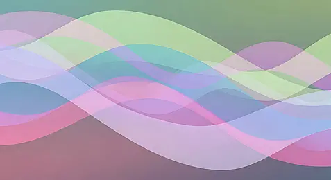
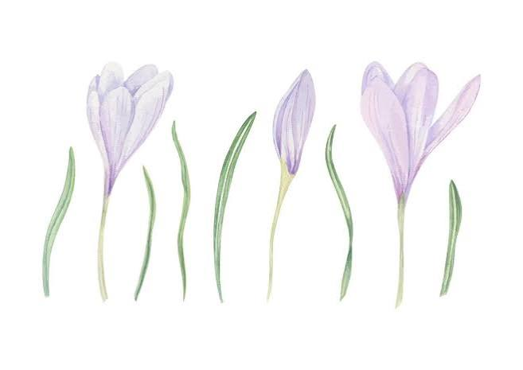
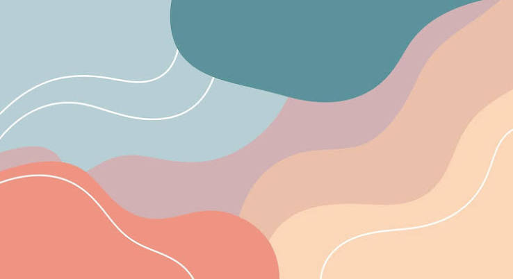
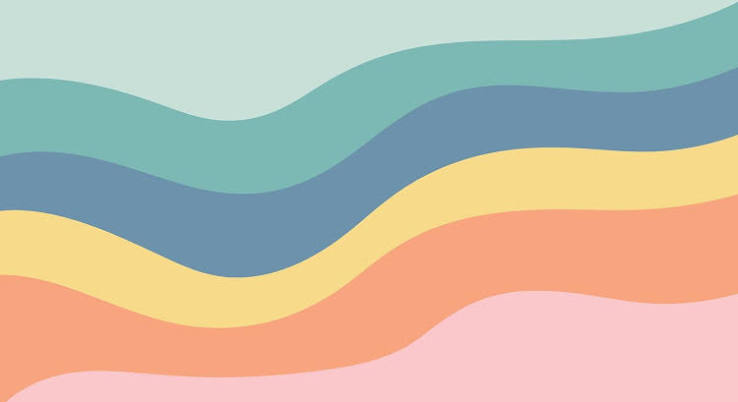
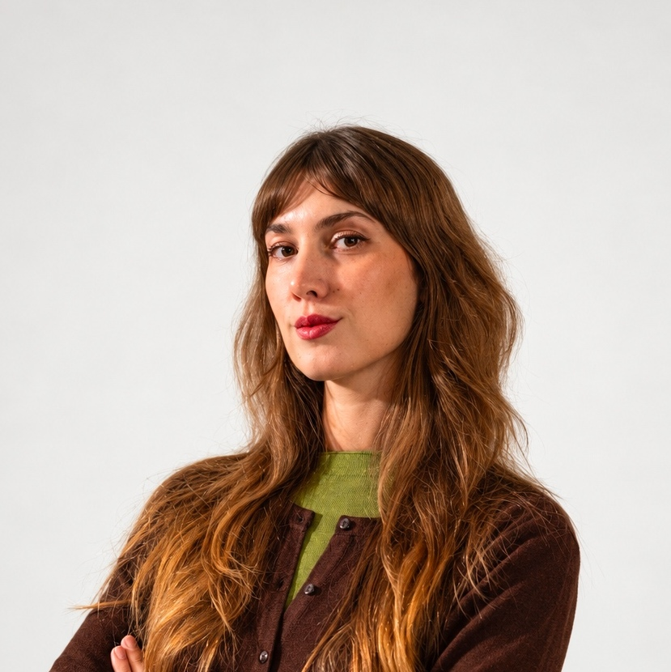

Mental health

Visualisation and listening
A journey of listening, awareness and change, built around your experience.
A space where we can discover recurring themes together and develop tools to help you move forward independently.

Method
Imagine each person’s journey as a river.
As a professional, I am here to help you understand the direction you are taking, work through obstacles and develop tools to overcome them. The journey we build together will focus on developing tools to help you navigate new obstacles, as well as familiar difficulties that may arise again.
The river follows its own course, flowing at the pace it needs, slowing down or gathering speed along the way. This is not a journey where we aim to fix, but to build.
The obstacle does not cease to exist: what changes is your attitude towards it. You are at the centre of this journey and decide the pace at which you want to move forward.

My role is to help you build the riverbanks, but only you decide where and how to flow.
How I work
An integrated, human and personalised approach
I am a mental health professional and believe in a holistic approach that brings together scientific knowledge, authentic listening and an appreciation of each person’s complexity.
Growing up in Pietrasanta, Italy, in an American-Norwegian family, I developed an intercultural sensitivity that shapes the way I welcome different stories, values and needs.
My training has given me tools to support a person as a whole, developing personalised pathways that respect their pace, resources and goals. By bringing together different aspects of conscious and subconscious experience, we can find tools that are useful in everyday life.
I offer a safe space to explore emotions, difficulties and personal resources, with the aim of supporting greater self-understanding and sustainable change. Asking for help can be an act of awareness and strength: a first step towards a more authentic and lasting sense of well-being. And ultimately, a first step taken by you.
Education and professional background
The main stages of my education and professional experience.
-
2020 — 2023
Bachelor’s degree in Psychological Sciences and Techniques
University of Florence — Cognitive Psychology pathway.
-
2020 — 2023
Training in hypnosis and guided relaxation
Training in hypnotherapy, guided relaxation techniques, active imagination, visualisation techniques, and pain and anxiety management.
Training as Assistant instructor on international courses in hypnosis, age regression and past-life regression.
Alliance Training - Michael Newton Institute - IACT.
-
2025
Professional training placement
PERLAB, Psychology, Emotions & Research Laboratory — Florence.
Placement and training in emotional intelligence in educational, organisational and individual settings.
-
May — November 2025
Research scholarship at the DIEF laboratory — Florence
Research scholarship in social neuroscience, in collaboration with the Department of Robotics Engineering, working with interfaces and machine learning in the study of inhibitory control.
-
2023 — 2025
Master’s degree in Clinical Psychology and Neuropsychology
University of Florence — Master’s degree in Clinical Psychology and Neuropsychology. Curriculum in Neuropsychological Assessment and Intervention, with a neuroscience focus.
Master’s thesis: Prefrontal connectivity and inhibitory control.
-
2022 — 2025
Cogpsy Laboratory
Collaboration with a neuroscience and cognitive psychology research laboratory, focusing on cognitive control, inhibition and EEG connectivity.
-
November 2025
Professional qualification in psychology
Italian State Examination for professional qualification as a psychologist — University of Florence.
-
2023 — Present
Hypnotherapy instructor
Instructor and teacher on international courses in hypnosis, age regression and past-life regression. Having reached 400 h in training for instructor position.
-
October 2026
Registration with the Order of Psychologists of Tuscany
Professional register number: 12233.
Sessions
I believe in the importance of a safe space in which to explore emotions, experiences and relationship patterns, supporting greater awareness and new possibilities for change.
We will plan the journey together, agreeing on the duration and frequency of sessions according to your individual needs. Each of us has a story that can be rewritten: we can change the narrative and redefine our role within it.
-
Psychological consultation
A space for listening and dialogue, dedicated to understanding your experiences, emotions and current difficulties. Together, we explore recurring themes and the obstacles you are facing.
Duration60 minutes
Fee€75
-
Guided relaxation and visualisation
Techniques designed to encourage body awareness, emotional regulation and a closer connection with your inner resources. We use active imagination to allow key elements of your story to emerge.
Duration120 minutes
Fee€150
-
Hypnosis and regression
An experiential journey to explore recurring themes through an integrated approach to conscious and unconscious experience. Together, we explore how life events may have influenced the development of present-day patterns.
Duration180–220 minutes
Fee€245
-
Session package
A personalised programme developed together, with the duration, frequency and type of sessions agreed according to your needs.
DurationTo be established together
FeeTo be established together

A space for what you are going through
Sometimes it can be difficult to put a name to what we are feeling.
We can start here.
Contact

For information or to arrange an initial consultation, you can contact me by email or WhatsApp.
Affiliated websites
Professional organisations and resources I collaborate with or am affiliated with.